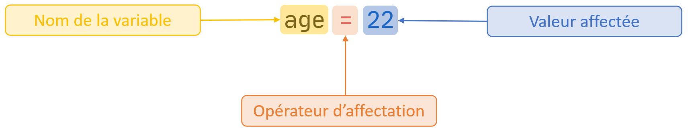
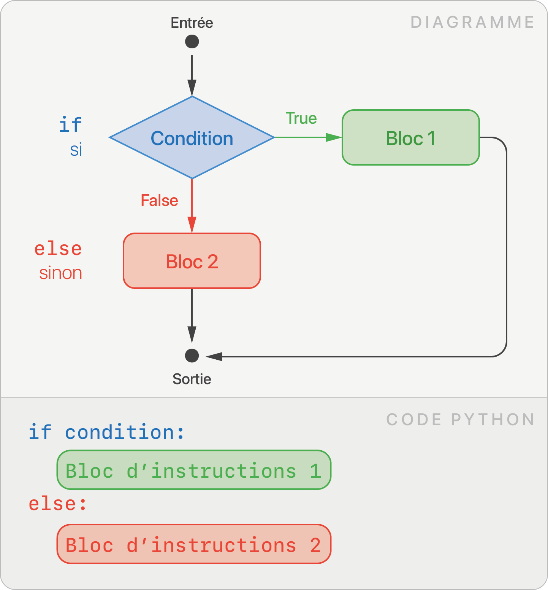

Feuille de Triche
Types et Valeurs
Un programme manipule des données, plus précisement des valeurs. On distingue 4 types de valeurs.
Les 4 types primitifs
| Type | Terme anglais | Signification | Exemples de valeur |
|---|---|---|---|
int |
integer | Nombre entier | 45 -255 1998 |
float |
float | Nombre décimal (ou flottant) | 3.1412 -1.14152 |
str |
string | Chaîne de caractères (texte) | "Bonjour" "42" |
bool |
boolean | Booléen | True False |
Conversions entre types
Pour passer d'un type à l'autre, on utilise les fonctions int,
float, str ou bool.
int(17.6) # float ► int, renvoie 17
int("42") # str ► int, renvoie 42
str(3.14) # float ► str, renvoie "3.14"
Variables
Une variable permet de stocker une valeur de n'importe quel type.
Affectation
L'instruction d'affection s'écrit :

On parle d'initialisation lors de la première affectation.
Réutilisation
Le contenu d'une variable peut être réutilisé dans des calculs :
x = 42
y = x + 1 # la variable x est remplacée par la valeur qu'elle contient, 42
# y vaut maintenant 43
Opérateurs Arithmétiques
Entre deux valeurs arithmétiques (int ou float)
| Opérateur Arithmétique | Signification | Exemple | Résultat |
|---|---|---|---|
+ |
Addition | 10 + 3 |
13 |
- |
Soustraction | 42 - 10.5 |
31.5 |
* |
Multiplication | 7 * 8 |
56 |
/ |
Division | 13 / 5 |
2.6 |
// |
Division entière | 13 // 5 |
2 |
% |
Reste dans la division entière (ou modulo) | 13 % 5 |
3 |
** |
Puissance | 4 ** 3 |
64 |
Les calculs suivent la priorité usuelle des opérateurs (par exemple, *, /
puis +, -).
resultat = 10 - 2 * 3
# resultat contient 4
Entre d'autres types
Les opérateurs arithmétiques ont un sens différent suivant le type de valeurs manipulées. Par exemple, on peut utiliser des chaînes de caractères :
"Oui" + "Non" # Concaténation, renvoie "OuiNon"
"Oui" * 3 # renvoie "OuiOuiOui"
C'est tout l'intérêt d'avoir différents types, la machine les traite différement.
Entrée / Sortie
Fonction print
La fonction print permet d'afficher des valeurs. Elle peut prendre
plusieurs paramètres.
print("Bonjour")
x = 42
print("La variable x vaut ", x)
Fonction input
La fonction input permet de récupérer une saisie utilisateur au clavier.
Elle renvoie une chaîne de caractères.
saisie = input() # input renvoie une chaîne de caractère
saisie = input("Saisir une entrée :") # input peut aussi afficher un message
nombre = int(input()) # conversion de l'entrée clavier vers un entier
Conditions
Ecrire une condition
Opérateurs de comparaison
Les opérateurs de comparaison renvoie un booléen : soit True (vrai),
soit False (faux).
| Opérateurs de comparaison | Signification | Exemple | Résultat |
|---|---|---|---|
== |
égal à | 1 == 1 |
True |
!= |
différent de | 1 != 1 |
False |
> |
supérieur à | 2 > 0 |
True |
>= |
supérieur ou égal à | 4 >= 6 |
False |
< |
inférieur à | 5 < 5 |
False |
<= |
inférieur ou égal à | 5 <= 5 |
True |
Opérateurs logiques
Les opérateurs logiques permettent de combiner des conditions. Ils fonctionnent entre deux booléens.
| Opérateurs logiques | Signification | Exemple | Résultat |
|---|---|---|---|
not |
non logique | not True |
False |
and |
et logique | False and True |
False |
or |
ou logique | False or True |
True |
Quelques exemples :
| Exemple | Signification |
|---|---|
x >= 2 and x <= 10 |
x est entre 2 et 10 |
x == 5 or x == 10 |
x est égal à 5 ou égal à 10 |
not x == 42 |
x n'est pas égal à 42 |
Structure conditionnelle if (si)

La clause if (si) permet d'exécuter un bloc d'instructions (code identé) si la condition est évaluée à True.
age = 22
if age >= 18:
print("Vous êtes majeur")
Structure conditionnelle if else (si, sinon)

La clause else (sinon) permet de spécifier en plus un bloc d'instructions à exécuter si la condition est évaluée à False.
age = 22
if age >= 18:
print("Vous êtes majeur")
else:
print("Vous êtes mineur")
Structure conditionnelle if elif else (si, sinon si, sinon)

La clause elif (else if, sinon si) permet de gérer plusieurs conditions. Si une condition n'est pas validée, la suivante est étudiée. Une telle structure conditionnelle peut contenir une ou plusieurs clauses elif.
note = int(input("Saisissez votre note au bac :"))
print("Votre mention est :")
if note >= 16:
print("Félicitations")
elif note >= 14:
print("Bien")
elif note >= 12:
print("Assez Bien")
else:
print("Pas de mention")
Boucles
Une boucle permet de répéter un bloc d'instructions.
Boucle bornée for (pour)
Lorsque le nombre de répétitions est connu, la boucle for qui permet de parcourir une séquence. On génère une séquence de nombres entiers grâce la fonction range.
Boucle non-bornée while (tant que)
Lorsque le nombre de répétitions n'est pas connu à l'avance, la boucle while permet de répéter un bloc d'instructions tant qu'une condition est vérifiée.

Fonctions
Une fonction est une portion de code qui effectue une tâche spécifique et qui peut être appelée à plusieurs endroits dans un programme.